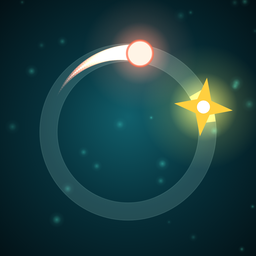

Something not working, or have an idea? Email us. We usually reply within two business days. If something isn’t working, tell us your device model and iOS version.
angeltechcorporationindustries@gmail.com
Tap anywhere to start, then tap each time the comet reaches the star. Hit the center for a PERFECT. Three perfects in a row raise your multiplier, up to ×5. One miss ends the run.
Open Settings › Purchases › Restore (or Customize › Coins › Restore purchases) while signed in with the Apple Account you bought with. Coin packs are added once, when you buy them, so spent coins can’t be restored.
Apple handles refunds for App Store purchases. Visit reportaproblem.apple.com.
Settings › Board name › Change. Tap Shuffle until you like one, then tap Use this name. Names come from a family-friendly word list so everyone stays anonymous.
Switch off Settings › Global leaderboard. Your entry is deleted from the server straight away. You can switch it back on any time to join again. Already deleted the app? Email us your board name and we’ll remove it.
Yes. Your progress saves on your device, and your best score posts to the leaderboard the next time you’re online.
Check that Sound and Music are on in Settings and that your volume is up.
Yes. Progress is stored only on your device. Purchased items (but not spent coins) come back with Restore purchases.